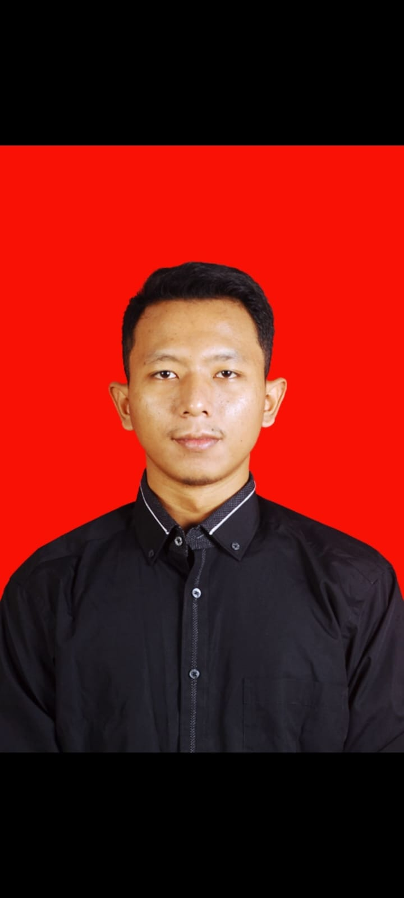

ERGUN
MAULANA PUTRA
Lulusan SMK Teknik Kimia Industri dengan pengalaman 6 tahun di bidang produksi: mengoperasikan mesin sanding dan buffing, final check, serta troubleshooting.

Taruh foto
sebagai foto.jpg
sebagai foto.jpg
Data diri
- Tempat, tanggal lahir
- Lamongan, 29 September 2002
- Kebangsaan
- Indonesia
- Jenis kelamin
- Laki-laki
- Status
- Belum kawin
- Telepon
- +62 857-8543-5458
- Alamat
- Dsn. Jombangan, Ds. Sumberwuluh, Kec. Dawarblandong, Mojokerto
- Tinggi / Berat badan
- 168 cm / 65 kg
- ergunmp87@gmail.com
Pendidikan
-
MI Liwaul Islam
-
SMP Negeri 2 Mantup
-
SMK Nasional Dawarblandong
Jurusan Teknik Kimia Industri
Pengalaman kerja
-
PT Roxy Music
- Assembling
- Final check
- Repair assembling
-
PT Cort Indonesia
- Mengoperasikan mesin sanding
- Mengoperasikan mesin buffing
- Final check akhir
- Memastikan produk sesuai standar kualitas
- Mengatasi troubleshooting
-
PKL di PT Petrokimia Gresik
Operator Mesin Industri
- Mengoperasikan proses reaksi pupuk NPK
- Memahami proses produksi dari awal hingga akhir sesuai standar operasional prosedur (SOP)
- Memantau jalannya produksi melalui DCS
Keahlian
- Microsoft Word
- Microsoft PowerPoint
- Disiplin
- Cekatan
- Beradaptasi di bawah tekanan
Hobi
- Sepak bola
- Gym
Siap bergabung dengan tim Anda
Hubungi saya untuk jadwal wawancara.
Chat WhatsApp Kirim email +62 857-8543-5458